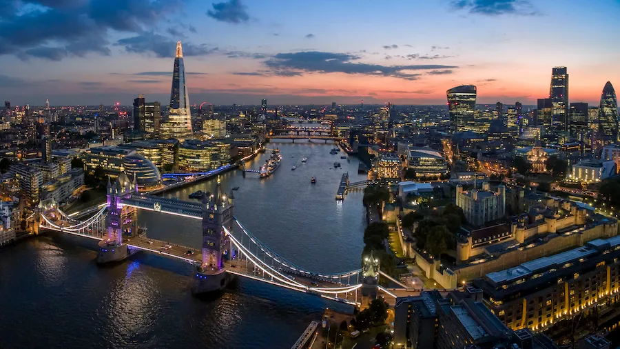

London is the capital and largest city of both England and the United Kingdom, with a population of 9.1 million people in 2024. Its wider metropolitan area is the largest in Western Europe, with a population of 15.1 million. London stands on the River Thames in southeast England, at the head of a 50-mile (80 km) tidal estuary down to the North Sea, and has been a major settlement for nearly 2,000 years.Its ancient core and financial centre, the City of London, was founded by the Romans as Londinium and has retained its medieval boundaries.
